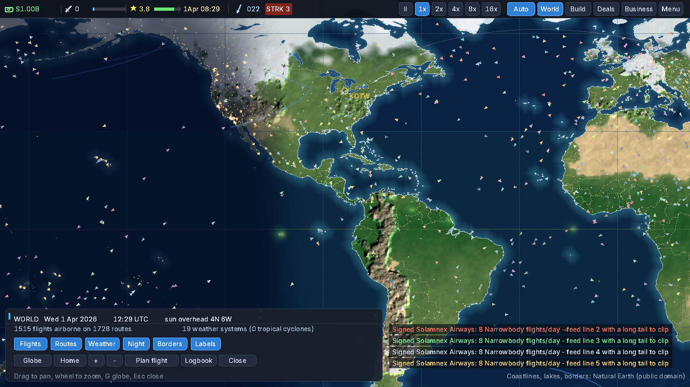
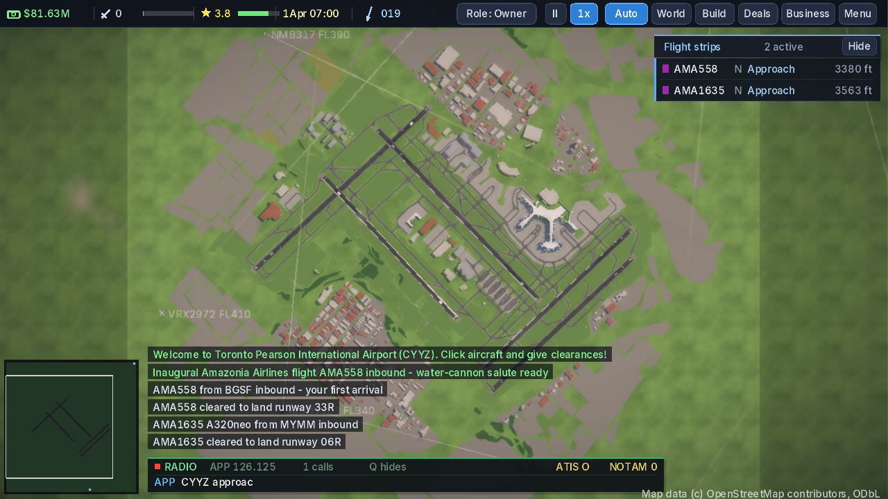

Project · Airport management simulation
AirportSim
Run an airport — inside a world that flies whether you watch it or not.
This section keeps three things separate, on purpose: the game today (verified), what is being built (active work), and the long-term vision (intent, not inventory).
About — two scales, one simulation
Global scale: a living aviation network runs across a real-Earth map — 4,531 airports, flights airborne around the clock, day and night sweeping the map, weather systems and real METAR reports, incidents that close runways.
Airport scale: inside that world you own and operate one airport — gates, construction, money, airline deals — or step into the work itself: pilot, air traffic controller, passenger, ramp worker, gate agent, security, airport firefighter. Eight playable roles, one coherent simulation underneath all of them. It is not an idle tycoon with mini-games attached; the management game and the operational game are the same world seen from different seats.
The game today — verified
Established by a full baseline audit on 2026-10-31 (build, launch and test results on the engineering & testing page):
- A living world network: in the captured test session, 1,405 flights airborne on 1,659 routes, under 23 weather systems — a reported baseline observation, not a guaranteed constant
- Airport ownership play: construction, gates, economy, airline deals, a home airport that can start half-broken and be built up
- Ground operations and air traffic control at 26 real layouts (Boston, Heathrow, Kelowna and 23 more)
- Eight playable roles in the same simulation
- Weather with real METAR data; country and locale data for 232 territories
- Saves that migrate forward across versions — save fixtures spanning versions 4 through 13 load cleanly in the test suite today
Check totals are the final integrated gate's measured results (2026-11-02, on the merged code — 72 test groups; the adoption baseline was 162,315 simulation checks). They show the tested behaviour holds; they are not, by themselves, proof that every feature works — the per-system grades live on the systems page.




What is being built
M1 — “Green gate & safe repository” — is complete and accepted (2026-11-01): a fresh clone of the default branch passed the strict gate, the repository trap was closed, and the adoption documentation was reconciled. Since then, the development line has completed the five-stage Development Mode workstream and the performance-baseline work package.
The integration (2026-11-02) — complete. The owner authorized a dependency-ordered sequence of eleven packages. All eleven are merged to the default branch, each verified after its merge: the save-persistence fixes (OwnerBook attribution, save format v11; FleetBook accumulators, v12; the simulation-clock widening, v13), the cargo save/reload audit, the whole-world reproducibility tests, the save-loader fuzz harness, the adoption framework documents, the test tooling (CI now runs four jobs), and a three-fix package (deterministic test worlds for the game binary, a top-bar overlap fix, and a latitude-conversion undefined-behaviour fix). The screenshot-capture reliability package (PR #9) merged after its checks found a Windows build failure in its own capture code — a one-line fix, made and re-verified the same day. The test-seeding package (PR #11) merged as the recorded resolution: its seeding turned out to be already covered by the three-fix package. The Development Mode branch merged last, after two small fixes on its first trip through the full checks (a Windows clock call made portable; a memory leak in a test, caught by the memory-safety run), both fixed and re-verified before merging. The final full gate on the integrated tree passed — 162,701 simulation checks and 9,676 interface checks, zero failed, end-to-end flows green, and all four CI jobs passing on the final code. No pull requests remain open. The integrated build is named 0.6.0-alpha.1 “Threshold” — the project's first Alpha and its first codename, approved by the owner on 2026-11-02; the code's version string now reads 0.6.0-alpha.1. The name is an internal development identity, not a release: no tag or public package exists for it, and the last public build remains 0.5.3.
The intermittent failure that shadowed the sequence — an unseeded test world making the interface test nondeterministic — is fixed for determinism. A related cosmetic defect remains open and tracked (issue #14): the Business window truncates long airline names.
Next, in order: the save/reload continuation investigation (issue #15 — a reloaded game continues slightly differently from an uninterrupted one; the owner unparked the investigation on 2026-11-02 and rated it a crucial fix, so it runs first after integration); then the Windows verification harness — the environment question is decided: the GitHub-hosted Windows CI runners will be extended into a scripted native test harness, and the owner's own PC stays out until release; then WP-09, which grows Development Mode into a full diagnostic environment. Player entry/onboarding (WP-05) follows on the roadmap. M1's original criteria remain:
- A clean clone of the default branch passes the strict release gate
- Test counts at or above the baseline (162,315 / 9,676), zero failures
- The automated pipeline passes on the same commit
- The source diff contains only the approved one-line gate fix (+ justified kin)
- The five documentation discrepancies are reconciled
- The default-branch problem is closed by the owner's approved route
All eight were satisfied with evidence — the details live on the engineering & testing page. Still openly unresolved, and staying on the register: native Windows verification of the current code (K3) — on 2026-11-02 the owner played a pre-adoption Windows build (0.5.4, by the original author) for about an hour at Detroit; it launched and played correctly, so gameplay on that older build is provisionally demonstrated, but saves were not tested and the current code's Windows build has never run natively — and the full end-to-end matrix has not yet been rerun on the current version (K6).
The long-term vision
Intent, not inventory: a sophisticated, polished airport simulation where depth serves decisions — a new player can get in and enjoy it, the living world keeps surprising its owner, and the business game underneath rewards long-term thinking. The phases that lead there are on the roadmap page, each with the gate that must pass before the next begins.